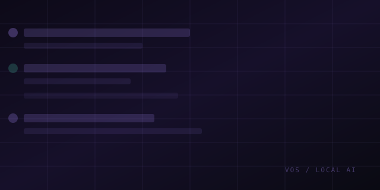
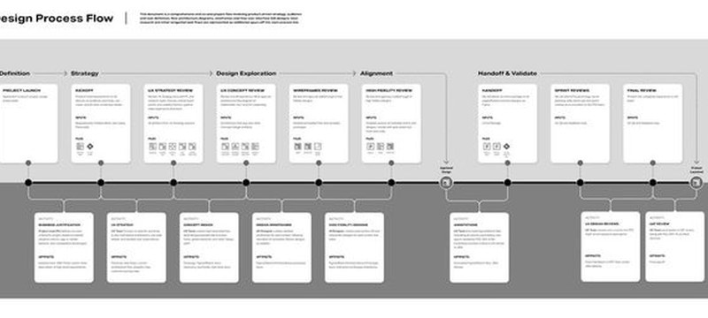
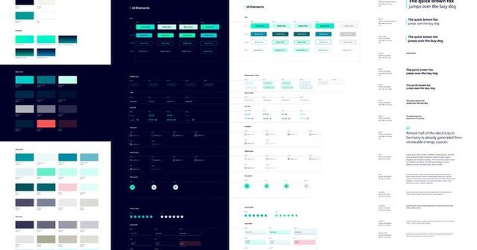
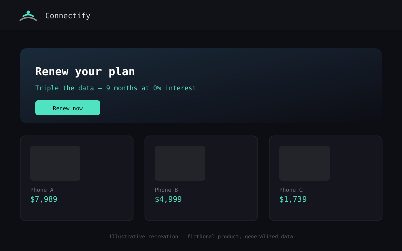
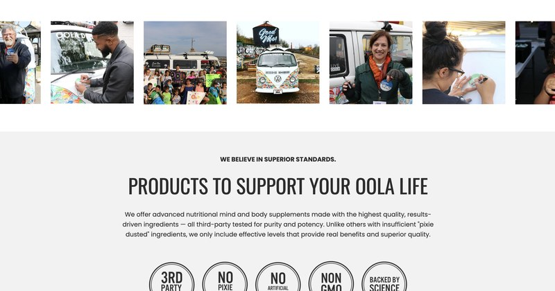
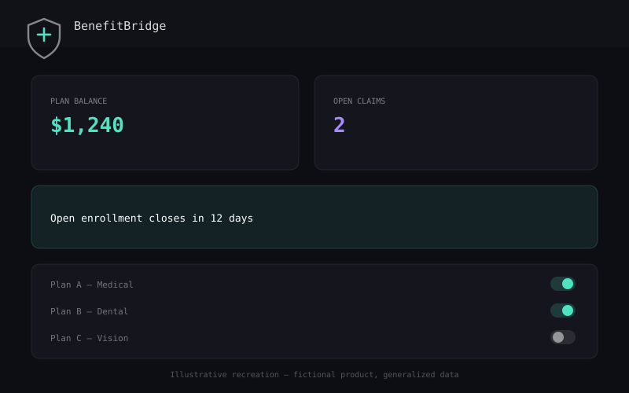
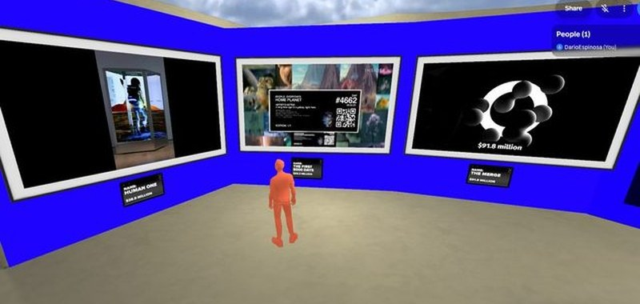
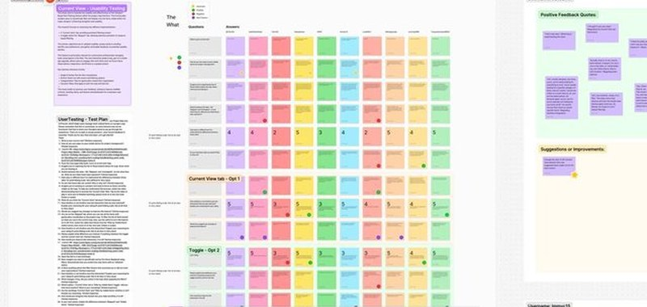

Experience across
industries & scales
Enterprise UX leadership, design systems, accessibility, and AI: from telecom to spatial computing.
Replacing a decades-old Excel model with an ML-driven web app that lets Plant Operations Managers optimize oil-well fluid formulas in minutes instead of hours. Designed using an AI-assisted prototyping workflow (Claude), reaching React-ready fidelity at v7.
Leading UX for a from-scratch rebuild of a legacy employee-benefits platform, and building the code-first, AI-assisted workflow (HTML-to-Figma, connected requirements, a shared token system) that let a small, multinational team ship two full portals to WCAG 2.2 AA.
Designing a mobile-first field platform for a national paving contractor — the sales bid, the dispatcher's desk, and the crew foreman's phone — through a forked, versioned prototyping pipeline a founder could click through without touching code.

A Slack-native operations brain for a real-world VR venue: daily checklists, reservations, sales tracking, and Dasha, an AI assistant running locally that handles what the team would otherwise forget.

Introduced Double Track Agile and a consolidated Figma design system to a burned-out team. Feature delivery got 30% faster, and UX bugs dropped by half.

After a fatal collision exposed a decades-old dispatcher tool, I led the full redesign solo — research, workflow restructuring, and a component-driven Figma + Flutter UI — with a direct line to the Product Director and no design committee in between. Operator task time dropped 40%, onboarding time 60%.

Led AT&T México’s five-year digital transformation across the flagship site, eCommerce platform, and dozens of microsites — including a 2021 AEM design system that moved seven teams from Photoshop into one shared Figma component library. Online sales rose 500%, with 96% accessibility compliance.

Turned a bestselling self-help book into a product people would actually open daily — not preachy, more like a coach than a checklist. ~50 interviews shaped a 7-area gamification framework behind a COVID-era pivot, shipped in 6 months.

First designer hired at a live healthcare SaaS platform with no design function. Built the UX practice and the product at the same time — the rebuilt admin flow now ships under one promise: “Manage benefits in under an hour per month.”

Designed a fully navigable immersive exhibition for a major European tech convention in 4 months, using Spatial + Unity. It drew 1,500+ virtual visitors.

Built scalable research guidelines and AI-assisted synthesis workflows across product verticals. Research turnaround dropped 50%, and cross-team adoption of the methodology followed.